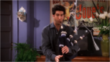

- s07e1- "The One With Monica's Thunder"
Minutes after Chandler proposes to Monica, she plans to celebrate on the town with he pals - until she catches Ross and Rachel kissing.
- s07e2 - "The One With Rachel's Book"

Monica's dream of elaborate nuptials fizzles when she learns what her parents have done with her wedding fund. Rachel is embarrassed when a teasing Joey stumbles onto her juicy, late-night reading material.
- s07e3 - "The One With Phoebe's Cookies"
Chandler's bonding attempt with his future father-in-law during a close sauna encounter backfires. Monica tries to replicate Phoebe's grandmother's secret cookie recipe by deconstructing her one last cookie.
- s07e4 - "The One With Rachel's Assistant"
When Rachel is promoted, she gleefully considers hiring an inexperienced hunk as her executive assistant. In a free-for-all tell-all game, Chandler and Monica expose humiliating secrets from each other's pasts.
- s07e5 - "The One With The Engagement Picture"
Unphotogenic Chandler can't get a good photo taken with Monica. Rachel plans to get closer to her hunky assistant by encouraging him to hang out with Joey, but the plan sours when he picks up on Joey's moves.
- s07e6 - "The One With The Nap Partners"

Monica frets when she meets one of Chandler's long-lost girlfriends and learns that he dumped her because she was fat. Phoebe and Rachel vie for the honor of becoming Monica's bridesmaid.
- s07e7 - "The One With Ross' Library Book"
When Joey decides to stop dating a girl that Rachel and Phoebe have come to adore, the ladies take action to change his mind. Ross fumes when he discovers the location of his dissertation in the university library.
- s07e8 - "The One Where Chandler Doesn't Like Dogs"
A beaming Rachel is happily surprised when her assistant Tag shows up at the gang's Thanksgiving dinner. Phoebe sneaks a puppy into the apartment, forcing Chandler to confess why he hates dogs.
- s07e9 - "The One With All The Candy"
Monica whips up some holiday candy for the neighbors. Rachel and Tag set the ground rules for their new romance. Moved by Phoebe's bikeless childhood story, Ross buys her a new two-wheeler.
- s07e10 - "The One With The Holiday Armadillo"
Ross wants to introduce son Ben to Hanukkah. In order to entice Rachel to move back into their refurbished apartment, Phoebe must drive a wedge between Rachel and current roomie Joey.
- s07e11 - "The One With All The Cheesecakes"
Phoebe's old flame David visits from Russia for an evening of romance. Rachel and Chandler swipe deliveries of a particularly tasty cheesecake from their neighbor's doorstep.
- s07e12 - "The One Where They're Up All Night"
Rachel and Tag's first night together is put on hold when they realize they forgot to overnight an important package. Ross and Joey are stuck on the roof and Phoebe can't disable a relentlessly beeping smoke alarm.
- s07e13 - "The One Where Rosita Dies"
Phoebe has a bizarre first day in her new job when she encounters a distraught office manager in a suicidal mood. Rachel and Chandler both believe they have broken Joey's favorite chair.
- s07e14 - "The One Where They All Turn Thirty"
Rachel's agony over her 30th birthday starts everyone reminiscing about what they did upon reaching that milestone.
- s07e15 - "The One With Joey's New Brain" 
Joey accidentally lets slip to a Days of Our Lives castmate that she is being written out of the script. Rachel and Phoebe try to sabotage each other's chances to date a guy who left his cell phone at Central Perk.
- s07e16 - "The One With The Truth About London"
Monica and Chandler grudgingly agree to let Joey marry them - once he's been "ordained" via the Internet. While babysitting, Rachel teaches Ben a few practical jokes.
- s07e17 - "The One With The Cheap Wedding Dress"
Monica regrets telling a fellow bride-to-be about a cheaper bridal store when she has to fight her tooth-and-nail for a unique wedding dress - and later the right to hire Chandler's favorite band for the event!
- s07e18 - "The One With Joey's Award"
Joey is overjoyed to be nominated for a "Soapie". Monica gets wedding jitters.
- s07e19 - "The One With Ross And Monica's Cousin"
When Monica and Ross's alluring cousin visits, her irresistible beauty causes serious distractions for all the men who meet her. Rachel and Phoebe try to rush their plans for Monica's shower.
- s07e20 - "The One With Rachel's Big Kiss"
Rachel bumps into her old sorority sister and wonders whether she should confront her about a night in college when their friendship took a passionate turn.
- s07e21 - "The One With The Vows"
Writing their wedding vows proves a daunting task for Monica and Chandler. Looking back over the pair's relationship, the other friends worry about changes in store for all of them.
- s07e22 - "The One With Chandler's Dad"
Monica arranges a meeting between Chandler and his estranged dad in hopes that they can reconcile before the ceremony. Rachel and a reluctant Ross borrow the keys to Monica's Porsche.
- s07e23 - "The One With Monica And Chandler's Wedding, Part 1"
Monica and Chandler gather their offbeat families on the eve of their wedding but there's one problem: Chandler is missing.
- s07e24 - "The One With Monica And Chandler's Wedding, Part 2"
While Ross searches for him, Rachel and Phoebe desperately try to distract the unsuspecting bride. Monica and Chandler get married. Someone is hiding a big surprise.